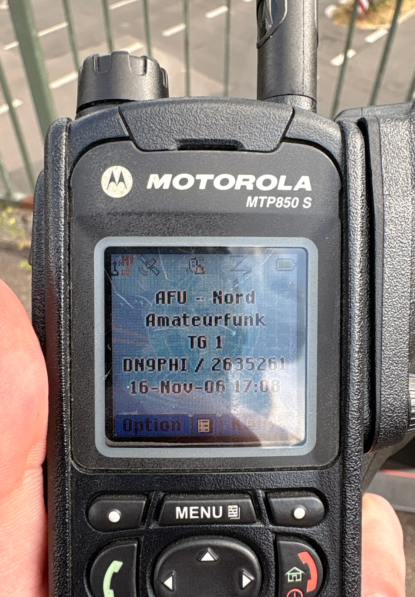
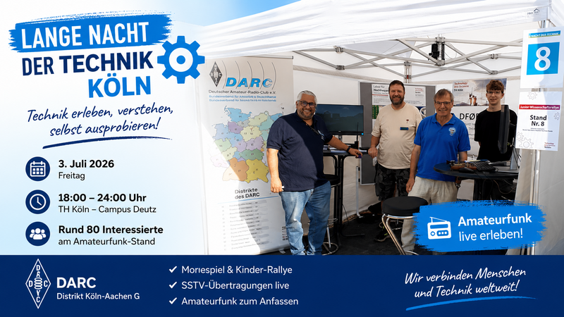
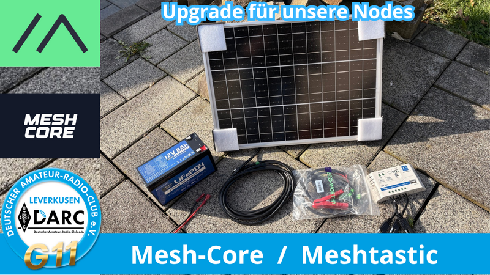
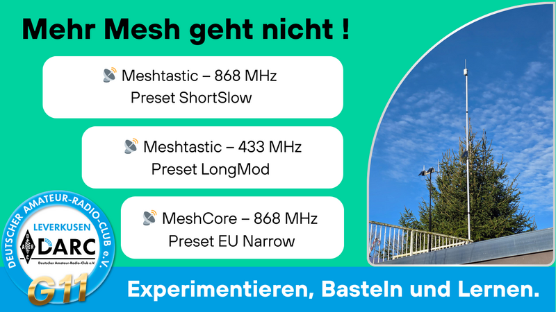
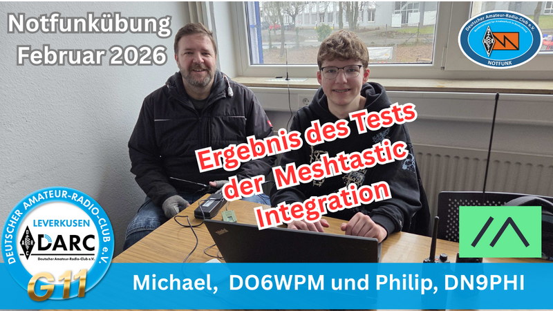
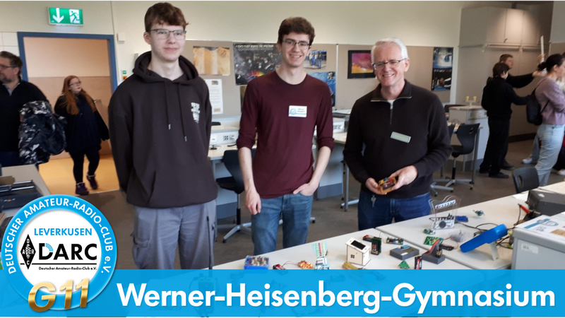
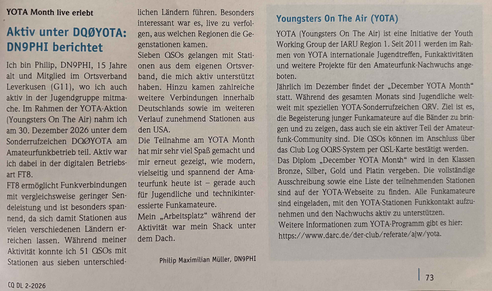

Meine Aktivitäten
Der Amateurfunk ist vielseitig – und das lebe ich auch. Hier dokumentiere ich meine Projekte, Veranstaltungen und besondere Empfänge – sortiert von neu nach alt.
TETRA-TMO-Verbindung zu DO0ATR

Endlich habe ich mit meinem MTP850S eine TETRA-TMO-Verbindung zu DO0ATR in Hürth aufbauen können! Damit erweitert sich meine Reichweite im TETRA-Netz erheblich. Seither habe ich schon mehrere QSOs mit sehr netten Leuten geführt – der Austausch auf TETRA macht richtig Spaß und die Gemeinschaft ist super aktiv!
Lange Nacht der Technik an der TH Köln

Bei der Langen Nacht der Technik war der Amateurfunk mit einem Stand vertreten. Rund 80 Besucher informierten sich über unsere Möglichkeiten. Besonders gut kam ein Morsespiel an, bei dem die Gäste ihren Namen in Morsezeichen übersetzen konnten – das war Teil der Kinder-Rallye und kam bei Groß und Klein super an. Wir haben auch live SSTV-Ãœbertragungen gezeigt und die Clubstation der TH Köln war durchgehend besetzt. Drei Teilnehmer meldeten sich noch am Abend für den nächsten Lizenzkurs an – ein voller Erfolg!
Veranstaltet wurde die Nacht gemeinsam mit den DARC-Ortsverbänden G73, G24, G19 und G11.
Solar-Upgrade für unsere Mesh-Nodes

Gemeinsam mit meinem Vater haben wir eine zentrale Solar-Stromversorgung für unsere drei Mesh-Nodes aufgebaut: 8000 mAh LiFePo-Akku (12 V), 25-W-Solarpanel und ein zentrales BMS mit 5-V-Ausgang. Damit sind die Nodes ganzjährig und wartungsarm im Einsatz.
Drei Mesh-Nodes – Mehr Mesh geht nicht!

Unser aktuelles Mesh-Setup besteht aus drei parallelen Nodes: Meshtastic auf 868 MHz (ShortSlow), Meshtastic auf 433 MHz (LongMod) und MeshCore auf 868 MHz (EU Narrow) – alles basierend auf RAK19007 + RAK4631. Weitere Infos auf MeshRheinland.de.
Notfunkübung mit Meshtastic

Im Rahmen der Distrikts-Notfunkübung haben wir Meshtastic als ergänzendes Kommunikationsmittel getestet. Von acht KIEZ-Standorten konnten sieben erfolgreich eine Rückmeldung zur Leitstelle senden. Der Test zeigte aber auch Schwächen im Routing bei der 1-zu-N-Kommunikation – wir arbeiten daran!
Jugendgruppe am Werner-Heisenberg-Gymnasium

Zusammen mit Oliver (DO2OLI), Ralf (DL8RD) und weiteren Mitgliedern der G11-Jugendgruppe haben wir uns am Tag der offenen Tür des WHG präsentiert. Neben einem kleinen Roboterprojekt und einer berührungslosen Harfe war ein 3D-Drucker im Einsatz, der live kleine Exponate für die Besucher druckte. Viele interessante Gespräche mit Schülern, Eltern und Lehrern.
YOTA Month 2025 – Aktiv unter DQ0YOTA

Im Rahmen des December YOTA Month war ich unter dem Sonderrufzeichen DQ0YOTA auf Kurzwelle aktiv. In der digitalen Betriebsart FT8 konnte ich zahlreiche QSOs mit Stationen aus Deutschland und dem Ausland durchführen. Der YOTA-Gedanke – junge Menschen für den Amateurfunk zu begeistern – liegt mir sehr am Herzen.